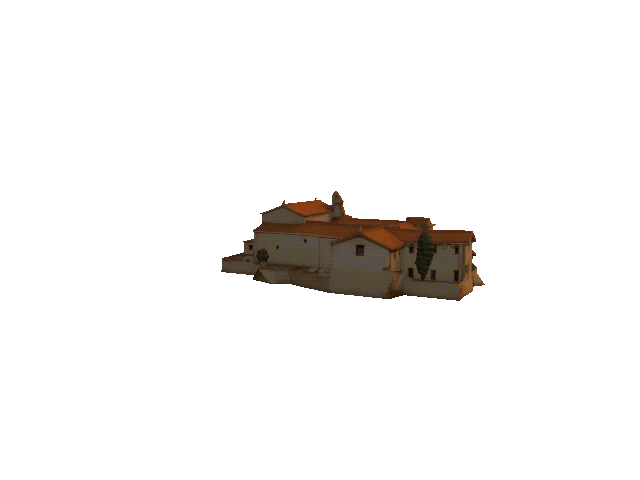

Convento dei Frati Cappuccini

Luogo di silenzio, meditazione e storia, le strutture del Convento si legano profondamente alla tradizione francescana in Sicilia...
Accesso:
Accessibile principalmente su richiesta o durante le ricorrenze francescane.
💡 I Gioielli Nascosti di Caccamo: Il borgo ospita ben 33 chiese. Utilizza la mappa di Din Don Dan...